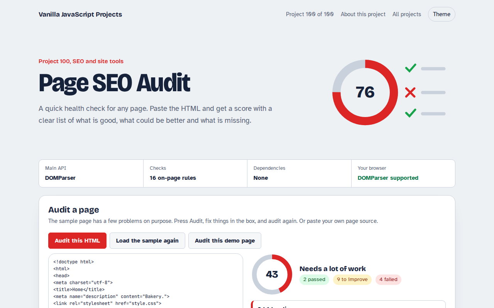
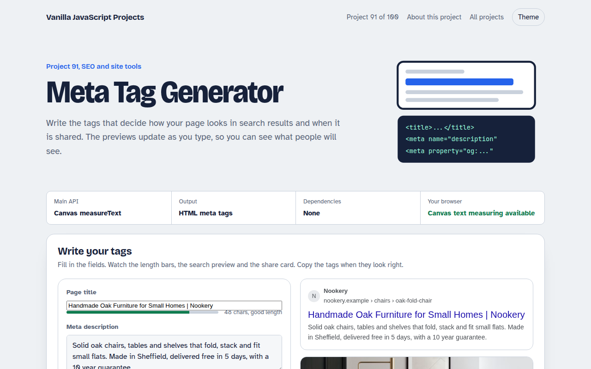
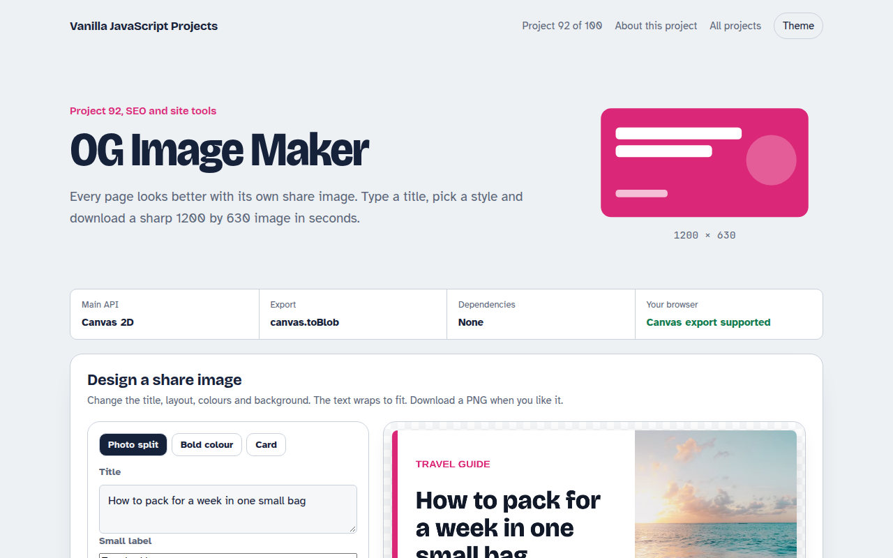
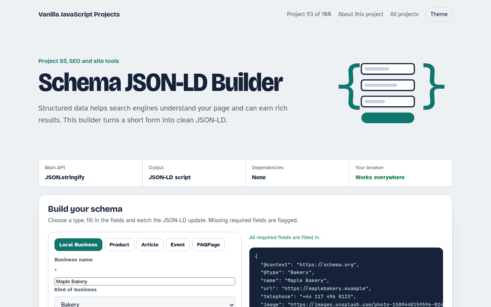
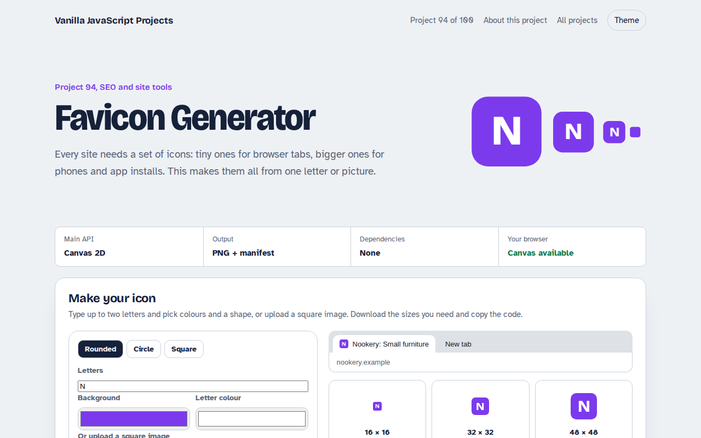
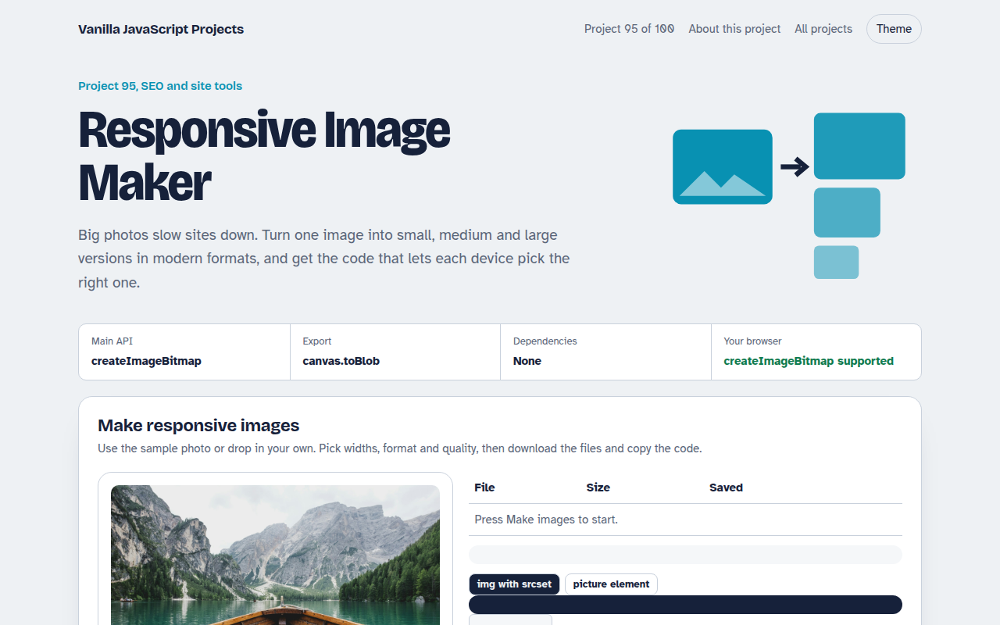
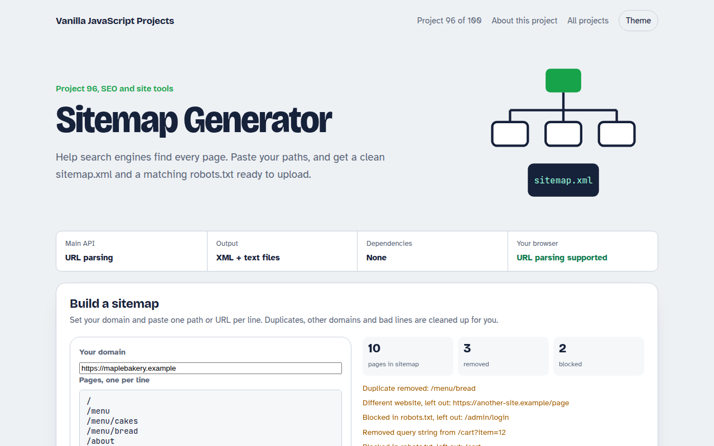

Home / SEO and Site Tools / Page SEO Audit
Page SEO Audit in JavaScript, Free with Live Demo
Free on-page SEO audit in plain JavaScript. Paste a page's HTML to check the title, description, headings, image alt text, links, canonical, Open Graph, schema and more, with a score and fixes.

Runs on: DOMParser. Works in all modern browsers.
What is the Page SEO Audit?
An on-page SEO checker. Paste any page source, or use the sample bakery page, and get a score out of 100 with passed checks, things to improve and failures.
It checks the title, description, headings, image alt text and sizes, language, mobile viewport, canonical, social tags, structured data, word count, links and noindex, with a short fix for each problem.
Good for
- Before publishing a page
- Reviewing client sites
- Checking pages that do not rank
- Teaching on-page SEO
What this project does
- 16 on-page checks
- Score ring with pass, improve and fail counts
- Plain reasons and code snippets for fixes
- Paste any HTML or audit the demo page itself
- Nothing is uploaded
How it works
- Parse without loadingDOMParser turns the pasted HTML into a document you can query, without running its scripts or loading its images.
- Sixteen quick rulesTitle and description length, one h1 and heading order, alt text and image sizes, language, viewport, canonical, Open Graph, schema, word count, links and noindex.
- Score and sortPasses count fully, warnings half. Failed checks come first, each with a short reason and, where useful, the code to add.
The key JavaScript
This is the heart of the project. The full file has the rest, including the screen layout and error handling.
const doc = new DOMParser().parseFromString(html, "text/html");
const checks = [];
const title = doc.querySelector("title")?.textContent.trim() || "";
checks.push(title.length >= 30 && title.length <= 60 ? "pass" : "warn");
checks.push(doc.querySelectorAll("h1").length === 1 ? "pass" : "fail");
checks.push(doc.querySelectorAll("img:not([alt])").length ? "fail" : "pass");
checks.push(doc.querySelector('link[rel="canonical"]') ? "pass" : "warn");
const score = checks.reduce((a, c) => a + (c === "pass" ? 1 : c === "warn" ? 0.5 : 0), 0) / checks.length * 100;How to use it
- Click Download HTML file above.
- Open the file in a code editor, like VS Code.
- Run it from a local server with
npx serve .so the camera, microphone and AI features are allowed. - Change the text and colors, then upload it to GitHub Pages, Netlify or your own site. It is one file with no build step.
Questions people ask
Can it check a live URL?
Browsers block reading other sites directly. Open the page, view its source, and paste it here. A server version could fetch URLs for you.
Does a score of 100 mean I will rank first?
No. These checks cover the basics on the page. Content quality, links and speed matter a lot too.
Why is word count a warning, not a failure?
Some pages, like contact pages, are short on purpose. Thin content only matters on pages you want to rank.
More SEO and Site Tools projects

091. Meta Tag Generator
A form that writes your title, description and social tags with live search and share previews
092. OG Image Maker
A canvas tool that makes 1200 by 630 share images with your title and brand
093. Schema JSON-LD Builder
A form that writes structured data for businesses, products, articles, events and FAQs
094. Favicon Generator
A tool that makes every favicon size and a web manifest from a letter or an image
095. Responsive Image Maker
A tool that resizes one photo into several sizes and writes the srcset code